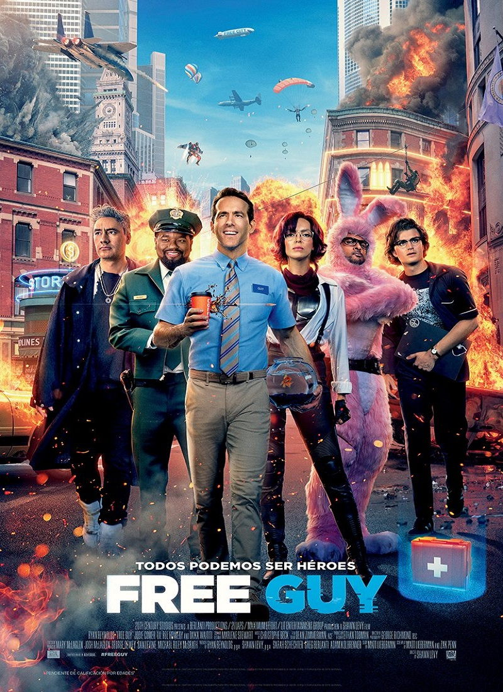
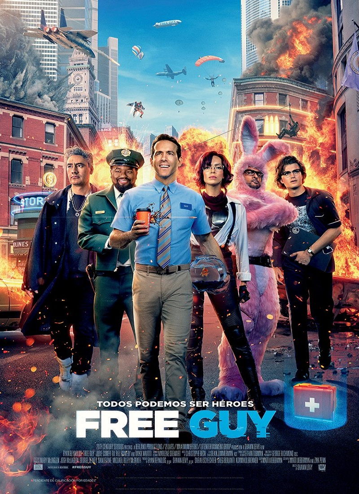

Новые фильмы
 


Новые сериалы
Как снимали "Человек-паук: Нет пути домой"
По сюжету, в кадре должен появиться дом доктора Стрэнджа на Бликер-стрит. Оказалось, что воссоздать жилище колдуна не так просто. «Нам нужно было заново обставить прихожую, которая строилась неоднократно в самых различных точках планеты, – рассказывает художник-постановщик Даррен Гилфорд. – Команда Чарли Вуда, который разрабатывал дизайн фильмов о докторе Стрэндже и фильмов франшизы МСТИТЕЛИ, готовилась к съемкам проекта ДОКТОР СТРЭНДЖ И МУЛЬТИВСЕЛЕННАЯ БЕЗУМИЯ как раз в тот момент, когда мы приступали к работе над картиной ЧЕЛОВЕК-ПАУК: НЕТ ПУТИ ДОМОЙ, поэтому нам пришлось выстраивать декорацию с нуля
Том Холланд прокомментировал Эндрю Гарфилда в «Человеке-пауке: Нет пути домой»
Эндрю Гарфилд – легенда. Он такой прекрасный парень. Я думаю, что этот фильм был его способом закончить с Человеком-пауком. Работать с ним было такой привилегией. Я знаю, что это много для него значило.